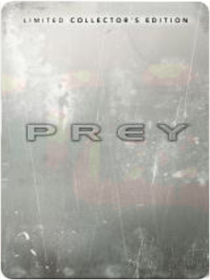

Atari Retro Atari Retro CardDoom 3 ActivisionDoom 3 continues the incredible shooter action of the first two Doom games! The Mars Research Facility has been invaded by demons from Doom, leaving only chaos and horror in their wake. You're one of the only survivors - to stay alive you'll have to fight your way to Hell and back.Elder Scrolls IV: Oblivion 2K GamesElder Scrolls IV: Oblivion is single-player role-playing action in the world of the popular Elder Scrolls game. The Emperor of Tamriel has been assassinated and the killer still runs loose. Meanwhile, no heir sits on the throne. With no Emperor upon the throne, the gates of Oblivion open wide and demons invade. Your quest is to find the lost heir and place him on the throne, before demons destroy the land. Next-generation graphics with pixel-shader effects for high-definition TVs, creating lifelike towns & dungeons and the most realistic forestsPrey Limited Collector's Edition  Take 2Platform: WINDOWS 2000/XP Publisher: 2K GAMES Packaging: RETAIL - METAL COLLECTORS TIN Rating: MATURE Prey tells the story of Tommy a Cherokee garage mechanic stuck on areservation going nowhere. His life changes when an otherworldly crisis forces him to awaken spiritual powers from his long-forgotten birthright. Abducted along with his people to a menacing mothership orbiting Earth he sets out to save himself and his girlfriend and eventually his planet. Prey is serious dark story based on authentic Cherokee mythology. Themes of sacrifice love and responsibility are explored and the story dives into emotionalterritory not yet explored by similar games.Limited Edition Content:Special metal packaging upgrade. Two die-cast pewter figures (Lead Character Tommy and the alien Hunter). Free download of the Prey soundtrack. "The Art of Prey" book.Features:Built on an enhanced Doom 3 engine the most impressive 3D engine used in a released game. Portal technology adds a new dimension to gameplay allowing enemies toappear out of thin air and create new and completely original puzzles andgameplay styles. Several never-before-seen gameplay elements such as Spirit Walking WallWalking and Deathwalk. Highly organic living environment that itself can attack Tommy. A deep emotional story of love and sacrifice. Tommy has a sidekick a spiritual hawk that can help him fight enemiesand decipher the alien language of the living ship. Multiplayer game support that takes advantage of the unique gameplay styles in Prey. System Requirements:Windows 2000/XP 1.8GHz processor minimum 512MB RAM Shader 2.0 compliant video card with at least 128MB RAM 3.5GB of free HD space Mouse KeyboardSam & Max: Season One Dreamcatcher InteractiveSam & Max are finally returning to retail stores worldwide this summer with their hilarious and critically-acclaimed game Sam & Max: Season 1. Experience why the game's bizarre humor crazy characters vivid 3D graphics and exciting gameplay make Sam & Max: Season 1 the funniest game in years!It's a vile world out there. Get too complacent and all sorts of weirdos start coming out of the woodwork. Good thing Sam & Max are here to hose down the sleaze and keep some kind of peace. Violently if possible.Who are these irreverent crime fighters? Sam's a six-foot tall canine shamus with a love of justice. Max is a hyperkinetic rabbity-thing with a taste for mayhem. Together they're a team of freelance police officers on a mission to take down a bizarre mind-control conspiracy. And they're bringing you along for the fun.Get ready to meet some off-kilter characters and to puzzle through some brain-tickling conundrums. Oh and to laugh at a whole lot of jokes!FEATURES: 6 self-contained cases with an overarching story arc. Thousands of laugh-out-loud dialogue lines. Simple gameplay mechanics with a low learning curve. Catchy jazz soundtrack featuring live performers and over 3 hours of original music. Intuitive gameplay that appeals to seasoned gamers and novices alike. Tons of extras including a full-size printed color poster and Bonus CD with: All-new Making Sam & Max behind the scenes video Trailers for episodes 1 - 6 Character bios Loads of concept artwork Wallpapers Soundtrack sampler Sam & Max online comic strip Comic generator for making your very own Sam & Max comic stripsFormat: WIN XPVISTA Genre: ENTERTAINMENT Rating: T UPC: 625904552501 Manufacturer No: PCO55250MBSimCity 4 Electronic ArtsIn SimCity 4, you don't just build your city, you breathe life into it. Sculpt mountains, gouge riverbeds, and seed forests to lay the groundwork for your creation. Then construct the most realistic metropolis you can imagine. Your city comes alive with the hustle and bustle of construction crews, the snarl of traffic, and the activity of your Sims. Move your personalized Sims into your city and watch as they go about their daily lives. Build mansions on mountainsides, raise skyscrapers downtown, and build transportation networks to form a massive region of SimCities that share and compete for resources. With every decision you make, your city and your Sims will respond for better or worse. In SimCity 4, your city pulses with the life you give it.The Sims 3 Electronic ArtsThe Sims 3 lets you immerse truly unique Sims in an open, living neighborhood just outside their door! The freedom of The Sims 3 will inspire you with endless possibilities and amuse you with unexpected moments of surprise and mischief. Your Sims can roam throughout their neighborhood, visit neighbors’ homes, and explore the surroundings. They can stroll downtown to hang out with friends, meet someone new at the park, or run into colleagues on the street. If your Sims are in the right place at the right time, who knows what might happen?! New easy-to-use design tools allow for unlimited customization to make truly individual Sims. Determine your Sims’ shape and size, from thin to full-figured to muscular—and everything in between! Choose your Sims’ facial features, their exact skin tone, hair eye shape and color and select their clothing and accessories. Create realistic Sims with distinctive personalities. Select from dozens of personality traits and combine them in fun ways. The combination of traits you choose—brave, artistic, loner, perfectionist, klepto, romantic, clumsy, paranoid, and much, much more—help shape the behavior of your Sims and how they interact with other Sims. Your Sims can now rise above their basic set of every day needs. They are complex individuals with unique personalities. Build your dream house or design the ultimate home. Customize everything from floors to flowers, shirts to sofas, wallpaper to window shades. It’s fun and easy to change colors and patterns giving you endless personalization options. Or you can populate your Sims’ neighborhood with pre-designed buildings and furnishings. Which of your Sims will live in high-end mansions, cool bachelor pads, ultimate dream homes or low-cost cottages?Star Wars Knights of the Old Republic LucasArtsProduct InformationStar Wars: Knights of the Old Republic takes you into the distant past of the Star Wars universe — over 4000 years before Episode I when battles raged between the Jedi and the Sith!Product FeaturesA massive conflict between Jedi & Sith has left the Republic weakened. Into this chaos steps a young Jedi on a mission. His mission will determine the outcome of this colossal galactic war - and your destiny as a JediLead your group of freedom fighters across the galaxy — you can choose from humans droids Twi'leks Wookies and moreRecruit other to your cause & train them in exciting mini-games like racing swoop bikes or manning turret gunsTravel to ten unique world in the Star Wars galaxy from the Jedi Academy on Dantooine to the Sith homeworld of KorribanCustomizable and evolving characters keep the story fresh and the gameplay interesting — especially when you have to choose between the Light & Dark Sides of The ForceUnreal Tournament 2004 Special Edition AtariThis software is BRAND NEW. Packaging may differ slightly from the stock photo above. Please click on our logo above to see over 15,000 titles in stock. |


 Made with Delicious Library
Made with Delicious Library